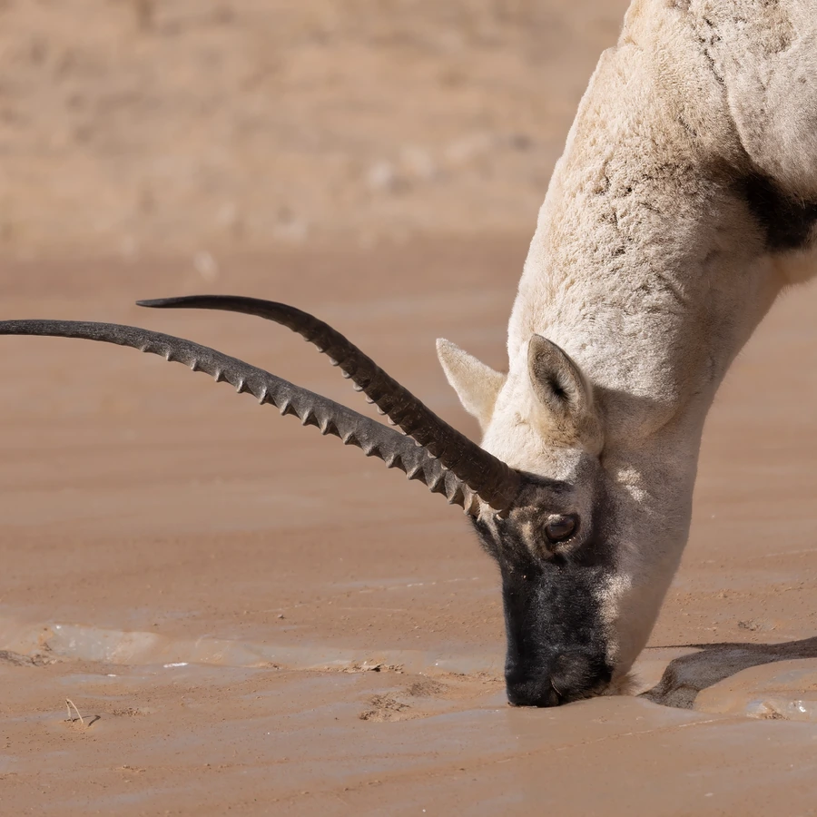

哺乳动物 · 动物界
藏羚羊 Pantholops hodgsonii

青藏高原特有的高原有蹄类，雄性长有细长竖琴状角，每年雌羚长途迁徙产仔，曾因羊绒贸易遭大量盗猎。
- 分类
- 门脊索动物门纲哺乳纲目偶蹄目科牛科属藏羚属
- 栖息环境
- 青藏高原海拔 4000–5500 米的高寒草原、荒漠与湖盆
- 地理分布
- 中国青藏高原（西藏、青海、新疆南部），少量个体进入印度拉达克
- 保护级别
- IUCN 近危（NT）；中国国家一级保护动物
物种志
藏羚羊体长 1.2–1.4 米，肩高 0.75–0.85 米，体重 25–40 kg，雄性略大。它的被毛厚密，背部为浅红棕色，腹部和臀部白色，冬季毛色变浅；雄性长有一对细长的黑色角，从侧面看呈竖琴状，雌性无角。鼻腔宽大，可加热吸入的冰冷空气。
藏羚羊栖息于青藏高原海拔 4000–5500 米的高寒草原、荒漠和湖盆，主食针茅、苔草等低矮植物，常结成数十只的群体活动，冬季可聚成上百只的大群。每年 6–7 月，怀孕的雌羚从越冬地迁徙数百公里，到可可西里等地产仔，产仔后带着幼羚返回。雄性角斗争夺配偶，奔跑时速可达 80 km/h。20 世纪 90 年代，为获取织造“沙图什”披肩的羊绒，盗猎使种群锐减；经过多年反盗猎保护，数量已回升至约 30 万只。
形态与习性
- 食性针茅、苔草等低矮高寒植物
- 体长1.2–1.4 m，肩高 0.75–0.85 m
- 体重25–40 kg
- 寿命约 10–12 年
- 繁殖11–12 月发情，妊娠期约 6 个月，每胎 1 仔
- 迁徙雌羚每年迁徙数百公里集中产仔
- 奔跑时速可达 80 km/h
趣味知识
- 藏羚羊的羊绒纤细保暖，曾被盗猎者织成昂贵的“沙图什”披肩。
- 每年 6–7 月，怀孕雌羚会迁徙数百公里到固定产仔地集中分娩。
- 雄性藏羚的角细长如竖琴，雌性则完全没有角。
- 藏羚羊鼻腔宽大，能把吸入的冰冷高原空气加热。